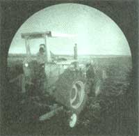
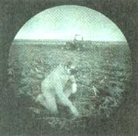
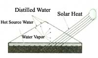
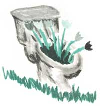
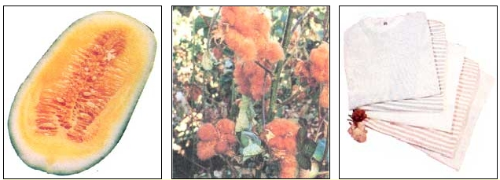

Issue # 152 - October/November 1995
TILLING FOR INSOMNIACS
Night-tilling may cut weed problems in half.
Dr. Buhler conducts a night-tillage
experiment on an Iowa farm.
If you're feeling restless some night and can't quite get to sleep, you might consider doing some tilling.
Research by Dr. Douglas Buhler of the National Tilth Laboratory, Agricultural Research Service, USDA, has shown that tilling fields in the dark can cut some weed problems almost in half. The experiment, now in its second year, involves a cooperative effort between two small farmers in Iowa and the researchers. So far this year's information is substantiating last year's find that tilling soil in the dark reduces the amount of weeds and in turn cuts the need for chemicals. When soil is tilled during the day, the sunlight activates the dormant weed seeds that have been exposed in the overturned soil. However, when soil is tilled at night, the darkness prevents the weed seeds from germinating. Dr. Buhler points out that this project might be difficult to develop on a large scale because it would involve altering work schedules during the busy growing and planting seasons.
However, this type of news might appeal to the unconventional small operator who wishes to grow as organically as possible. Weeds that are being studied include annual grass species like foxtail; small seeded broadleaf, like ragweed and pigweed; and large seeded broadleaf weeds, like velvetleaf and cocklebur. To date, small seeded broadleaf weeds are most substantially affected. Researchers are not sure how much light is too much, but reports are that even the light from a full moon may be enough to germinate the weed seeds. Studies in Europe are concentrating on which varieties of seed are more susceptible to light. While researchers concede that it is not practical to do all tilling at night, experimenters are working with several ideas including redesigning tilling equipment to exclude light and completely enclosing field rows with tents after they have been tilled.
-Kevin O'Keeffe
Another proof that the sun is an endless alternative energy resource comes in the form of solar distillation.
Dennis R. Lemon started his own company to help people contain the purification process of nature for individual use. It markets solar distillers under the brand name SunPure Drinking Water Systems.
Lemon wanted to share the benefits of solar distillation and bring the do-it-yourselfer all the information necessary to build a solar water distiller, with or without products from his company. He does so in his book As Sure as the Sun Rising: Pure Water Nature's Way. It is "a complete practical guide to solar distillation."
The book covers basic distiller designs for basin-type, titled-wick, multiple-effect, multiple-sun, and greenhouse distillers. It also describes the subsystems that can be used to support these different designs. Lemon provides technical diagrams that illustrate each type of distiller, give measurements, and show the relation of the sun to the source water.
Lemon believes, "People should choose solar distillation as the permanent solution to their drinking water problems. Solar distillation is the way to go....I want to see people assure their personal health by drinking pure, solar-distilled water."
For more information about the manual or to order it, call 1-800-590-0090 or write to SunPure Drinking Water Systems, 400 Main St. North, PO Box 1725, Lyons, CO 80540-1725.
-Meleah Rush
Compost Happens
"Cigarette butts, empty beer cans lying along the road, plastic six-pack rings, Styrofoam clam-shell burger boxes, deodorant cans, disposable diapers, discarded appliances, discarded pop bottles, newspapers, old car tires, spent batteries, junk mail, nuclear garbage, convenience foods, exhaust emissions, the 5 billion gallons of drinking water we flush down our toilets every day, and the millions of tons of organic refuse discarded into the environment year after year," these things J.C. Jenkins calls "human waste."
But human excrement is not "human waste," says Jenkins, unless you waste it, flushing it away instead of recycling it. It's a resource we regularly waste and along with it we waste plenty of pure water as well, which really rankles Jenkins, who recently wrote and published The Humanure Handbook: A Guide to Composting Human Manure (Emphasizing Minimum Technology and Maximum Hygienic Safety).
The guide is riddled with quite a few puns ("When the Crap Hit the Fan," and "Holy Sheesh" are chapter subheads) and quite a bit of Jenkins's politics, from which you get the impression that composting "humanure" is your civic duty along the lines of voting. But mostly the handbook contains a lot of hard information taken from the author's 15 years of humanure composting experience. Jenkins has composted all of his family's humanure since 1979. The resulting compost has always been used in his food garden. Jenkins has also done considerable research; he's packed directions for safely composting humanure with tables and figures of things like carbon/nitrogen ratios for killing pathogens and compost temperature curves. He includes diagrams of sawdust toilets and various composting toilets from your Guatemalan moldering toilet to your camp composter. The handbook provides extensive references, glossaries, step-by-step illustrations, tables, and supply source lists.
Jenkins, who clearly believes composting is the only moral thing to do, tries to debunk what he considers to be myths around composting human waste that has fueled what he calls "fecophobia." "There was some literature published on the subject of composting humanure back in the 1970s which insinuated that humanure compost was practically as toxic as nuclear waste." While denouncing the raw sewage fertilizers of the Third World, Jenkins provides a convincing case that human waste can and should be a safe composting material, a fact that seems to be supported by the growing popularity of Clivus Multrum composting toilets in "mainstream" facilities such as national parks. Jenkins approves of the Clivus Multrum, since no water is required to operate the toilet. A major drawback, however, is that they cost anywhere from $2,500 to $10,000 They also require electricity
His preferred toilet is the non-commercial, i.e., homemade, sawdust toilet. And he gives a detailed, illustrated description of how and why the sawdust toilet works, and how and why he believes the low-impact, low-technology sawdust toilet became the most civilized invention since we moved from caves to houses. For more information, or to order your copy of The Humanure Handbook: A Guide to Composting Human Manure (Emphasizing Minimum Technology and Maximum Hygienic Safety) by J.C. Jenkins ($12), write Jenkins Publishing, PO Box 607, Grove City, PA 16127.
-Molly Miller
For those of you out there who enjoy a bargain (and who doesn't?), we've got a few for you:
Margaret Smith-White, cookbook editor for Cambridge Books, has amassed a directory of 250 companies who will provide free recipes and product coupons. For example, Hunt's Tomato products (Dept. G, PO Box 400011, El Paso, TX 88540-0011) will send you the prize-winning chili recipes from the International Chili Society cook-off from 1984 through 1995. You can get a copy of The Surprise Natural Sweetener and 101 Ways to Use It from the Molasses Information Network (PO Box 800, Dept. MIN, Riverton, NJ 08077). For your free copy of Smith-White's Recipe List, send a stamped self-addressed envelope to: Cambridge, Department A-27, PO. Box 48382, Phoenix, AZ 85075
Famed in song, story and decades of TV ads, the venerable Consumer Information Catalog is still not used by as many people as it should be. This free guide to free and low-cost federal publications on a multitude of topics is a treasure trove of ideas and glimmers as to where some of that tax money is going. Released by the Consumer Information Center, the guide lists publications that range from financial planning to government auctions to food and nutrition, and much more. For a free copy send your name and address to: Consumer Information Catalog, Pueblo, Colorado 81009, or call (719) 948-4000 24 hours a day.
If your local government has decided to build a toxic waste facility next to your property or you get involved in some kind of zoning battle, you need facts and information to build your case. Now you have The Environmentalist's Guide to the Public Library, offering names and addresses of people and agencies that can assist in making a safer and healthier world. From toxins to conservation, this guide assembles information on resources that can be found at your local library into an accessible booklet. For a free copy call 1-800-542-1918.
-K.O.
What would happen if, while tossing up a salad to go with dinner, you slice a recently purchased cucumber that is orange inside?
Today you might take it back to where you bought it and ask for your money back. A few years from now, though, you may be happy to know that this salad will have more nutrients than one made with the usual green cucumber.
After more than eight years of research, scientists at the U.S. Agricultural Research Service have developed a cucumber that has green skin, but is orange inside. It packs higher levels of beta carotene, five parts per million on average, than a regular cucumber's one ppm.
Beta carotene, a carotenoid, is found in yellow and orange foods. It aids eyesight and resistance to infection, as well as helps keep skin, hair, teeth, gums, and bones healthy.
Research shows that the antioxidant beta carotene possesses "cancer preventing compounds," according to Dr. Philipp Simon, an ARS plant geneticist who helped develop the new lines of cucumbers. In some studies, people with diets that include higher amounts of beta carotene also demonstrate a reduced risk for stroke and coronary heart disease.
This alternative source of beta carotene originates from new breeding lines cultivated by Simon and former University of Wisconsin graduate student John Navazio.
Simon became interested after reading about the Xishuangbannan cucumber grown in the Orient reported to have an internal orange color. In 1987 he received seeds of this breed and, along with Navazio, began intercrossing these cucumbers with typical U.S. cucumber varieties.
"In the progeny we looked for cucumbers with the orange color and characteristics necessary for U.S. production," Simon said. Throughout the following years, the two continued intercrossing the types and looking for the orange-colored inside, while retaining proper size and pickling capabilities essential for sale to the public.
Now, although the varieties remain slightly variable, "we have the combinations of what we are looking for," said Simon. Further testing is under way and it will take a couple of years to select exact varieties that reproduce consistently.
While in the U.S. the orange cucumber might be just a novelty niche for those willing to try something new, in developing countries the unusually colored fruit could become another source of desperately needed vitamin A, especially for children. The body converts beta carotene into vitamin A, an essential nutrient. Vitamin A deficiency causes blindness and even death.
Though they contain higher levels of beta carotene, carrots are a cool season crop and do not grow well in the warmer climates of some developing nations. Cucumbers, however, do. The new breeds of cucumber, with their raised levels of beta carotene, would provide a ready option for more vitamin A and "orange pickles would provide this vitamin in a preserved form," Simon said.
INGRA RICHARD ARMUS
Not to worry, even though the cantaloupe-colored inside of the cucumber provides more beta carotene, it does not change the fruit's flavor.
So, if you ever run across an orange cucumber in the produce aisle, don't be afraid to give it a try.
-M.R.
Imagine fields and fields of cotton. Now imagine these fields with green, brown, red, and yes, even mocha-colored cotton. What? Yes, naturally bred colored cotton. Planet Vision/Pure Organic of Las Vegas, Nevada, in partnership with small family farmers in the southwest United States, are ditching the conventional manner of growing with pesticides and processing with dyes in order to create a product that is dedicated to natural organic growing. The end result is a naturally colored genetic hybrid cotton that is used to make ecologically conscious apparel.
Bob Parucha, vice president of sales for Planet Vision, points out that "over 800 million pounds of pesticides are used annually to grow cotton." His company is providing an alternative to those who want a choice over the products that they put on their backs. Farmers use insects instead of insecticide to control the bug problems that cotton growers must endure. In an old-fashioned manner, the fields are weeded by hand and fed by composted material. Farmers then depend on frost to defoliate the plants for harvest.
Presently Planet Vision produces 11 differently styled shirts. These shirts come in earth-tone colors and recently have been the shirts of choice for several big-name concert bands for sale to their eco-friendly fans. The price of these shirts, both tees and long sleeves, competitively range from $14 to $28.
For more information, contact Planet Vision/Pure Organic at 1-800-35-PANDA.
-K.O.
|
 PHOTOS COURTESY OF USDA/ARS Dr. Buhler conducts a night-tillage experiment on an Iowa farm. |
 INGRA RICHARD ARMUS Technician Keith Kohler wears night-vision scopes. |
 Principles of solar distillation. |
|
 JAMIE LEO |
 COURTESY OF P.W. SIMON/UNIVERSITY OF WISCONSON/USDA-ARS |
|